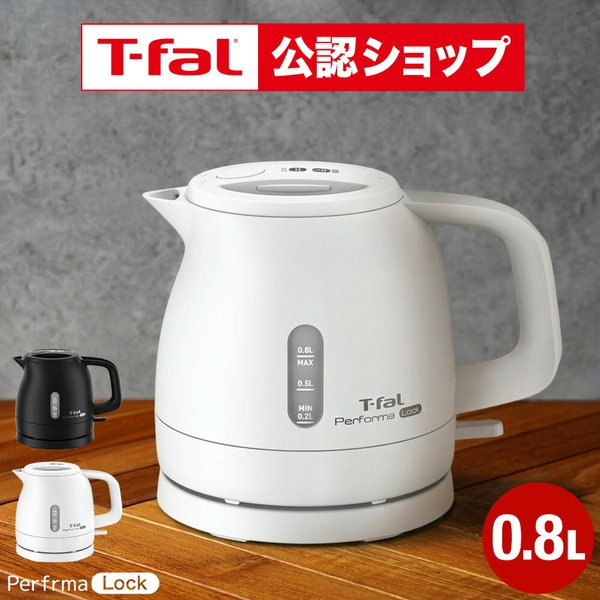
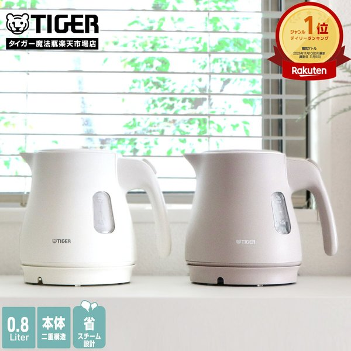
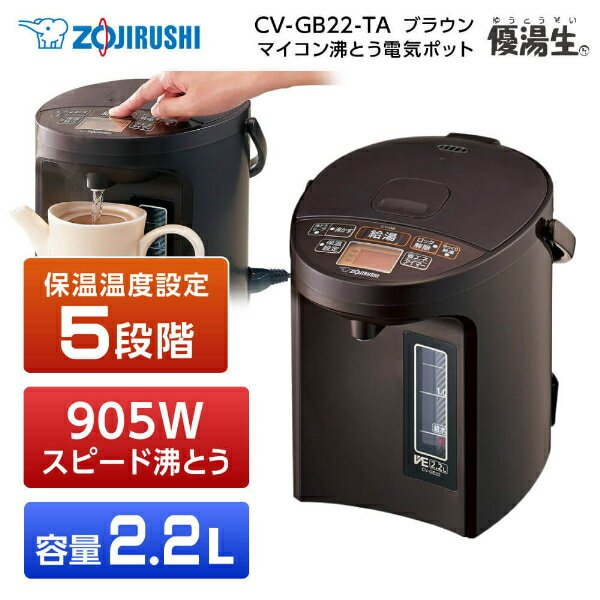
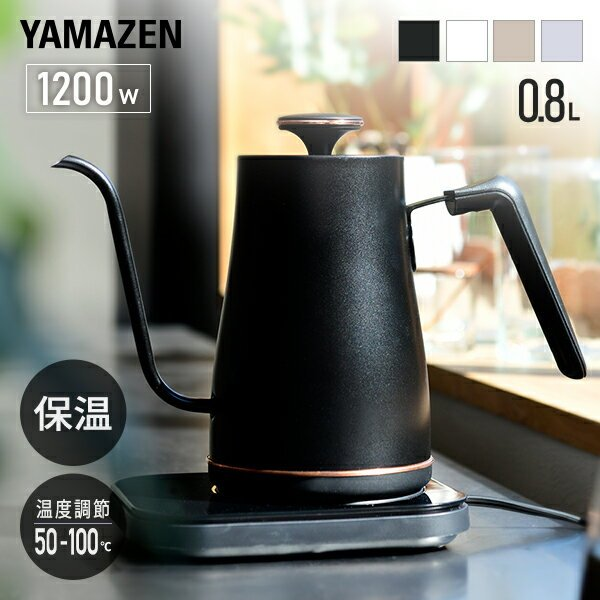
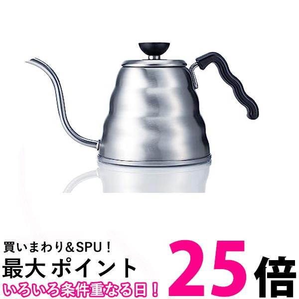
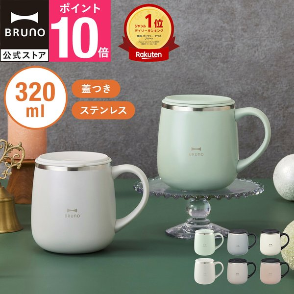
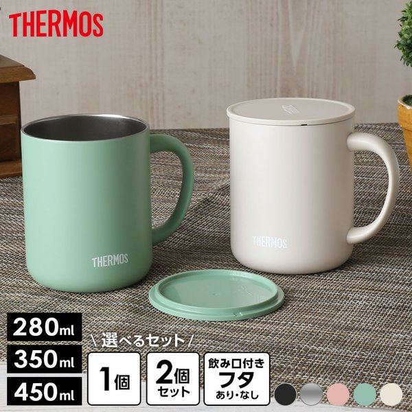
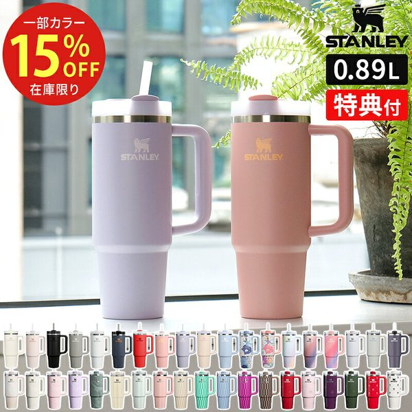
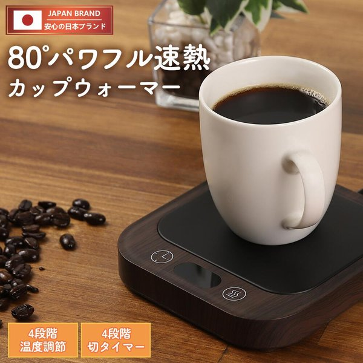

【2026年・冬の温かい飲み物】温度調節電気ケトル・ドリップケトル・真空断熱マグ・蓋付きタンブラー・カップウォーマー10選｜バルミューダ・ティファール・タイガー・象印・山善・ハリオ・BRUNO・サーモス・スタンレーを実売価格で比較
冬の朝は、お湯を沸かすまでの数分が長く感じます。ケトル、マグ、タンブラー、カップウォーマー。温かい飲み物まわりの道具は、ひとつ変えるだけで一杯の温度が変わります。
選ぶ軸は3つです。「まずお湯の沸かし方」。一杯ずつ沸かすなら0.8L前後の電気ケトル、コーヒーを淹れるなら温度設定か細口のドリップケトル、家族分を保温するなら電気ポット。「次にカップの保温」。真空断熱のマグやタンブラーなら、注いだあとの温度が下がりにくくなります。「最後にデスクの一杯」。カップウォーマーがあると、作業中もコーヒーが冷めません。なお、レビュー件数が50件に満たない商品は記事内に実数を明記しています。
本記事では、楽天市場で人気・高評価の冬の温かい飲み物グッズ10選を、実売価格とレビュー評価つきで写真付き紹介します。
- おすすめ10選 スペック・特徴比較表
- BEST 1｜ザ・ポット KPT03JP（550ml・新基準モデル）
- BEST 2｜パフォーマ ロック 0.8L KO1611JP
- BEST 3｜電気ケトル わく子 0.8L PCM-N080
- BEST 4｜電気ポット 優湯生 CV-GB22 2.2L
- BEST 5｜温度調節グースネック電気ケトル EGL-C1281 0.8L
- BEST 6｜V60ドリップケトル ヴォーノ VKBR-120HSV 800ml
- BEST 7｜蓋つきステンレスマグ short 320ml
- BEST 8｜真空断熱マグカップ JDG 350ml
- BEST 9｜クエンチャー H2.0 フローステート 0.89L
- BEST 10｜カップウォーマー 最大80℃ タイマー付き
- 【読者負担0円】買わなくても得する無料サービス
- まとめ：冬の温かい飲み物10選の選び方
| 順位 | 商品名 | ブランド | 最大の特徴・おすすめ理由 | 総合評価 |
|---|---|---|---|---|
| BEST 1 | ザ・ポット KPT03JP（550ml・新基準モデル） | バルミューダ（BALMUDA） | 細口でドリップしやすい | 4.76 |
| BEST 2 | パフォーマ ロック 0.8L KO1611JP | ティファール（T-fal） | 蒸気が出にくく置き場所を選ばない | 4.28 |
| BEST 3 | 電気ケトル わく子 0.8L PCM-N080 | タイガー魔法瓶（TIGER） | 軽くて片手で注げる | 4.70 |
| BEST 4 | 電気ポット 優湯生 CV-GB22 2.2L | 象印マホービン（ZOJIRUSHI） | 5段階の保温温度を選べる | 4.67 |
| BEST 5 | 温度調節グースネック電気ケトル EGL-C1281 0.8L | 山善（YAMAZEN） | 50〜100℃を1℃単位で設定できる | 4.39 |
| BEST 6 | V60ドリップケトル ヴォーノ VKBR-120HSV 800ml | ハリオ（HARIO） | ガス火・IHの両方に対応 | 4.96 |
| BEST 7 | 蓋つきステンレスマグ short 320ml | BRUNO（ブルーノ） | フタ付きで湯気が立ちにくい | 4.69 |
| BEST 8 | 真空断熱マグカップ JDG 350ml | サーモス（THERMOS） | 真空断熱で外側が熱くなりにくい | 4.74 |
| BEST 9 | クエンチャー H2.0 フローステート 0.89L | スタンレー（STANLEY） | 0.89Lの大容量 | 4.76 |
| BEST 10 | カップウォーマー 最大80℃ タイマー付き | AP-091（ノーブランド企画品） | 最大80℃まで温度調節できる | 4.56 |
ザ・ポット KPT03JP（550ml・新基準モデル）

バルミューダのザ・ポットは、細口の注ぎ口と静かな沸とうが特徴の電気ケトルです。550mlはカップ2杯分を沸かすのにちょうどよく、朝のコーヒーや白湯を一杯ずつ作る使い方に向きます。沸とう後は自動で電源が切れ、本体は手のひらに収まるサイズなのでテーブルに置いたまま使えます。楽天市場での実売価格は約18,920円（2026年11月時点）。
- 細口でドリップしやすい
- 沸とうが静かで朝でも使いやすい
- 置いたままでも絵になるデザイン
- 容量が550mlなので、家族分を一度に沸かすには足りない
パフォーマ ロック 0.8L KO1611JP

ティファールのパフォーマ ロックは、0.8Lのスチームレス電気ケトルです。沸とう時の蒸気を抑える構造で、キッチンの吊り戸棚の下にも置けます。フタはロック式で、倒してもお湯がこぼれにくい設計。空焚き防止と自動電源OFFが付き、毎日使う道具としての基本がそろっています。楽天市場での実売価格は約3,680円（2026年11月時点）。
- 蒸気が出にくく置き場所を選ばない
- フタロックで倒しても安心
- 空焚き防止と自動電源OFF付き
- 温度を細かく設定する機能はない
電気ケトル わく子 0.8L PCM-N080

タイガーのわく子は、0.8Lの軽量な電気ケトルです。本体が軽く、片手で注げるのが扱いやすいところ。蒸気を抑える省スチーム構造で、沸とう時の湯気が立ちにくく、キッチンの上でも使えます。空焚き防止と自動電源OFF、転倒時のお湯もれ防止を備え、毎朝の白湯やお茶に使う道具として安心感があります。楽天市場での実売価格は約4,980円（2026年11月時点）。
- 軽くて片手で注げる
- 省スチームで湯気が立ちにくい
- 転倒時のお湯もれ防止付き
- 保温機能はないので、時間がたつと冷める
電気ポット 優湯生 CV-GB22 2.2L

象印の電気まほうびん「優湯生」は、2.2Lを沸かしてそのまま保温できる電気ポットです。保温温度は5段階から選べ、80℃前後で保温すればお茶にもコーヒーにもすぐ注げます。沸とうは905Wのスピード沸とうで、マイコンが沸とうを抑えて蒸気を減らします。ボタンを押すだけで必要な分だけ注げる卓上ポットです。楽天市場での実売価格は約11,780円（2026年11月時点）。
- 5段階の保温温度を選べる
- 2.2Lを沸かしてそのまま保温できる
- ボタンで必要な分だけ注げる
- 本体が大きく、置き場所を選ぶ
温度調節グースネック電気ケトル EGL-C1281 0.8L

山善のグースネック電気ケトルは、50〜100℃を1℃単位で設定できる温度調節機能付きです。細口の注ぎ口でハンドドリップにも使え、設定した温度で保温もできます。1200Wの高出力で沸とうが速く、空焚き防止も付いています。コーヒー用のドリップケトルと白湯用のケトルを1台で済ませたい人に向いています。楽天市場での実売価格は約7,999円（2026年11月時点）。
- 50〜100℃を1℃単位で設定できる
- 細口でハンドドリップにも使える
- 設定温度で保温できる
- 細口の内側は、洗うときに奥まで手が届きにくい
V60ドリップケトル ヴォーノ VKBR-120HSV 800ml

ハリオのV60ドリップケトル・ヴォーノは、ガス火とIHに対応したステンレス製のドリップケトルです。実用容量800mlで、2〜3杯分のコーヒーを淹れられます。細く安定した注ぎができるように注ぎ口の形が作られていて、ハンドドリップの湯量をコントロールしやすい。電気を使わないぶん、コンロのある暮らしに向いています。楽天市場での実売価格は約3,061円（2026年11月時点）。
- ガス火・IHの両方に対応
- 800mlで2〜3杯淹れられる
- 細口で湯量を調整しやすい
- レビューは26件と少なく、電気ケトルのように温度設定はできない
蓋つきステンレスマグ short 320ml

BRUNOの蓋つきステンレスマグは、真空二重構造の320mlマグです。フタ付きなので湯気が立ちにくく、デスクに置いたまま温かい飲み物を長く楽しめます。取っ手が付いたマグ型で、コーヒーだけでなくスープや味噌汁を入れるのも手軽。落ち着いたカラーで、キッチンに出しっぱなしでも馴染みます。楽天市場での実売価格は約2,200円（2026年11月時点）。
- フタ付きで湯気が立ちにくい
- 真空二重構造で保温・保冷できる
- 取っ手付きでスープにも使える
- フタがあるぶん、飲むときに毎回開ける手間がある
真空断熱マグカップ JDG 350ml

サーモスの真空断熱マグカップは、280ml・350ml・450mlから選べるステンレス製です。二重構造の真空層が熱を逃がさず、熱いコーヒーを入れても外側が熱くなりにくいのが利点。取っ手付きで、フタをすれば保温性が上がります。オフィスのデスクや在宅の作業机に置くサイズとして使いやすいモデルです。楽天市場での実売価格は約2,780円（2026年11月時点）。
- 真空断熱で外側が熱くなりにくい
- 3サイズから選べる
- フタ付きで保温できる
- 食洗機に対応するかはモデルで異なるので確認する
クエンチャー H2.0 フローステート 0.89L

スタンレーのクエンチャー H2.0は、0.89Lの真空断熱タンブラーです。ストロー付きのフタで、車のドリンクホルダーにも収まる形状。保冷力が高く、氷を入れた飲み物が長く冷たいまま保てます。ハンドル付きで持ち運びやすく、室内でもアウトドアでも使えます。カラー展開が多く、好みで選べるのも人気の理由です。楽天市場での実売価格は約5,516円（2026年11月時点）。
- 0.89Lの大容量
- ストロー付きフタで車でも飲みやすい
- 保冷力が高く氷が長持ちする
- フタとストローは分解して洗う必要がある
カップウォーマー 最大80℃ タイマー付き

コンセント式のカップウォーマーは、マグカップを置くだけで飲み物を温め続ける卓上ヒーターです。最大80℃まで温度を調節でき、タイマー付きなので切り忘れの心配がありません。熱燗やココアなど、冷めると味が落ちる飲み物に向いています。特定のメーカー名を持たない企画品ですが、永久保証が付いています。楽天市場での実売価格は約2,999円（2026年11月時点）。
- 最大80℃まで温度調節できる
- タイマー付きで切り忘れを防げる
- 永久保証付き
- 底が平らなカップでないと安定しにくい
この記事の商品を買う前に、まずは無料で得する選択肢をチェック。どれも登録・利用は0円で、無料期間中に解約すれば料金はかかりません。読みたい雑誌がある人、ポイントを貯めたい人、アンケートなら気軽という人、それぞれに合うものを選べます。
初回31日無料・無料期間中に解約すれば0円 → 楽天ポイントモール｜登録無料で毎日ポイ活
買い物なしでもポイントが貯まる無料サービス → 楽天インサイト｜アンケートに答えてポイント
登録無料・すきま時間のアンケートで貯まる → 楽天カード｜年会費永年無料
新規発行・年会費ずっと0円 →
4つのサービスの違いと使い分けは「出費0円で得する！買わずにポイントが貯まる無料サービス厳選4選」でまとめています。
💡 まとめ：冬の温かい飲み物10選の選び方
温かい飲み物の道具は、沸かす・注ぐ・保つの3つに分けて考えると揃えやすくなります。沸かす道具は、一杯ずつならバルミューダのザ・ポット、家族分を保温するなら象印の電気ポット優湯生、コスパ重視ならティファールのパフォーマ ロックかタイガーのわく子。コーヒーを淹れるなら、温度を1℃単位で設定できる山善のグースネックケトルか、コンロで使えるハリオのV60ドリップケトル。注いだあとを保つのは、BRUNOの蓋つきステンレスマグ、サーモスの真空断熱マグ、スタンレーのクエンチャー。デスクで長く飲むなら、タイマー付きのカップウォーマーを足すと、冬の一杯が最後まで温かいままになります。
楽天市場では「5と0のつく日」や「お買い物マラソン」などのキャンペーンに合わせて購入すると、ポイント還元が最大化してお得に手に入ります。ぜひチェックしてみてくださいね。